Prática 0: Introdução ao R
Sara Mortara
3 de dezembro de 2018
Bem vindo(a) ao R
Os dez mandamentos do R pelo professor Alexandre Adalardo de Oliveira da USP:
- 0º - Não entrarás em pânico!
- 1º- Utilizarás o R para tuas análises bem como para a manipulação de teus dados (não mais o Excel);
- 2º - Nunca digitarás o código no console;
- 3º - Salvarás seus scripts e não se preocuparás com o .RData;
- 4º - Sempre concatenarás;
- 5º - Jamais esquecerás dos parênteses das funções;
- 6º - Conferirás o diretório de trabalho e os dados após a importação, antes de enlouqueceres;
- 7º - Usarás o help antes de perguntares e não culparás o R por teus erros;
- 8º - Não esmorecerás após as primeiras noites em claRo e jamais amaldiçoarás o R por tuas faltas de vírgulas;
- 9º - Lembrarás das aspas dos caracteres;
- 10º- Não cobiçarás e aperfeiçoarás os códigos alheios e nunca ocultarás o código e a autoria original;
Uma introdução
Vamos sempre abrir o R e um arquivo de texto onde iremos digitar os comandos. O primeiro passo é definir o diretório de trabalho onde você irá trabalhar com o R. Lembre-se sempre: você digita os comandos e o R executa.
Definindo o diretório de trabalho
Antes de tudo, vamos checar em qual o diretório o R está aberto usando a função getwd:
# use a função getwd para checar o diretorio de trabalho
getwd()## [1] "/home/sara/saragit/my_page/demo"Vamos então definir um novo diretório de trabalho. Recomendo que você crie um diretório chamado ‘atividadesR’ em seu computador, que contenha todos os arquivos e pastas do ‘atividadesR’ no google drive da disciplina. Vamos manter os dados dentro da pasta ‘dados’ nesse mesmo diretório. As atividades da aula teórica estão no diretório ‘teorica’ e as práticas (como esta), no diretório ‘praticas’. Neste momento, vamos trabalhar dentro do diretorio ‘praticas’. Se você já está à vontade com o R e prefere organizar de outra forma, vá em frente! Esta é apenas uma recomendação para que os códigos da aula funcionem diretamente no computador de vocês.
Atenção 1: usuários de Linux e Mac devem usar uma barra / para separar os diretórios. Usuários de Windows devem usar a barra invertida \ ou duas barras //.
Atenção 2: o comando abaixo funciona apenas para o computador da Sara. Defina o seu próprio caminho.
Verifique se a mudança de diretório funcionou usando novamente a função getwd:
# use a função getwd para checar o diretorio de trabalho
getwd()## [1] "/home/sara/saragit/my_page/demo"Verifique os arquivos que estão no diretório:
# use a função dir para checar os arquivios que estão no diretorio de trabalho
dir()## [1] "aulas.html" "aulas.Rmd"
## [3] "dados" "demo.Rproj"
## [5] "figuras" "index.html"
## [7] "index.Rmd" "pratica0_introducao_ao_R.Rmd"
## [9] "pratica1_conhecendo_os_dados.Rmd" "pratica2_regressao_linear.Rmd"
## [11] "pratica3_selecao_modelos.Rmd" "pratica4_glm.Rmd"
## [13] "_site" "site_libs"
## [15] "_site.yml" "teste.html"
## [17] "tutoriais.Rmd"E também verifique se o workspace do R está vazio:
# para listar os objetos existentes na sua área de trabalho (deve estar vazio)
ls()## character(0)Quem faz o R?
O a criação e manutenção do R depende de uma grande equipe. Para saber como citar o R use é só usar a função citation :
citation()##
## To cite R in publications use:
##
## R Core Team (2019). R: A language and environment for
## statistical computing. R Foundation for Statistical Computing,
## Vienna, Austria. URL https://www.R-project.org/.
##
## A BibTeX entry for LaTeX users is
##
## @Manual{,
## title = {R: A Language and Environment for Statistical Computing},
## author = {{R Core Team}},
## organization = {R Foundation for Statistical Computing},
## address = {Vienna, Austria},
## year = {2019},
## url = {https://www.R-project.org/},
## }
##
## We have invested a lot of time and effort in creating R, please
## cite it when using it for data analysis. See also
## 'citation("pkgname")' for citing R packages.Criando objetos
No R você pode guardar o resultado de um comando usando uma operação de atribuição. Podemos usar os três operadores de atribuição <-, = e -> podem ser usados de várias maneiras para criar objetos. Por exemplo, estes comandos:
# cria o objeto 'a' que recebe a raiz quadrada de 4
a <- sqrt(4)
# cria o objeto 'b' que recebe a raiz quadrada de 4
b = sqrt(4)
# cria o objeto 'c' que recebe a raiz quadrada de 4
sqrt(4) -> cVamos ver?
# visualizando o objeto 'a'
a## [1] 2# visualizando o objeto 'b'
b## [1] 2# visualizando o objeto 'c'
c## [1] 2Agora, se pedirmos a lista dos objetos na área de trabalho teremos:
# listando todos os objetos da área de trabalho, agora deve aparecer os objetos criados
ls()## [1] "a" "b" "c"Se a atribuição é para um objeto que não existe, esse objeto é criado. Mas cuidado: se já há um objeto com o mesmo nome na sua área de trabalho, seus valores serão substituídos:
# criando o objeto a que recebe a raiz quadrada de 4
a <- sqrt(4)
# visualizando o objeto 'a'
a## [1] 2# criando um novo objeto 'a' que recebe o número '100'
a <- 10^2
# visualizando o novo objeto 'a'
a## [1] 100Como conseguir ajuda no R
Formas de :
- A página de ajuda do R
- Coleguinhas
- A grande rede “how to do anova in R”
# para acessar a pagina de ajuda de uma função usamos a função 'help'
help(mean)# uma outra forma de acessar a página de 'ajuda'
?meanLendo um arquivo de dados no R
Na maior parte do tempo, usaremos o R para ler um conjunto de dados do nosso próprio trabalho. Para ler os seus dados no R é necessário que eles estejam em formato de texto .txt ou .csv. Usualmente, organizamos os dados como uma variável por coluna e uma observação por linha.
Vamos ver um exemplo com os dados do arquivo ‘exemplo-caixeta.csv’ que está no diretório ‘atividadesR’ -> ‘dados’.
Esta parte da prática é adaptada dos tutoriais do professor João Batista da ESALQ-USP.
Para ler o arquivo e gravá-lo num objeto vamos usar o comando abaixo:
# estamos atribuindo ao objeto cax a planilha em csv
cax = read.csv(file="dados/exemplo-caixeta.csv")se você digitar o nome do objeto:
cax## local parcela arvore fuste cap h especie
## 1 chauas 1 1 1 210 80 Myrcia sulfiflora
## 2 chauas 1 3 1 170 80 Myrcia sulfiflora
## 3 chauas 1 4 1 720 70 Syagrus romanzoffianus
## 4 chauas 1 5 1 200 80 Tabebuia cassinoides
## 5 chauas 1 6 1 750 170 indet.1
## 6 chauas 1 7 1 320 80 Myrcia sulfiflora
## 7 chauas 1 8 1 480 160 Tabebuia cassinoides
## 8 chauas 1 9 1 240 140 Tabebuia cassinoides
## 9 chauas 1 10 1 290 120 Tabebuia cassinoides
## 10 chauas 1 10 2 310 120 Tabebuia cassinoides
## 11 chauas 1 10 3 230 120 Tabebuia cassinoides
## 12 chauas 1 11 1 210 80 Tabebuia cassinoides
## 13 chauas 1 12 1 240 70 Myrcia sulfiflora
## 14 chauas 1 13 1 250 80 Myrcia sulfiflora
## 15 chauas 1 14 1 160 100 Tabebuia cassinoides
## 16 chauas 1 14 2 230 100 Tabebuia cassinoides
## 17 chauas 1 14 3 320 100 Tabebuia cassinoides
## 18 chauas 1 15 1 410 160 Tabebuia cassinoides
## 19 chauas 1 16 1 600 140 myrtaceae4
## 20 chauas 1 17 1 240 100 Tabebuia cassinoides
## 21 chauas 1 17 2 180 100 Tabebuia cassinoides
## 22 chauas 1 17 3 200 100 Tabebuia cassinoides
## 23 chauas 1 17 4 430 100 Tabebuia cassinoides
## 24 chauas 1 18 1 210 90 Myrcia sulfiflora
## 25 chauas 1 19 1 390 80 Tabebuia cassinoides
## 26 chauas 1 20 1 310 90 Tabebuia cassinoides
## 27 chauas 1 20 2 240 90 Tabebuia cassinoides
## 28 chauas 1 21 1 520 150 myrtaceae1
## 29 chauas 1 21 2 450 150 myrtaceae1
## 30 chauas 1 22 1 230 80 indet.2
## 31 chauas 1 23 1 670 230 Tabebuia cassinoides
## 32 chauas 1 24 1 240 100 Tabebuia cassinoides
## 33 chauas 1 24 2 310 100 Tabebuia cassinoides
## 34 chauas 1 24 3 220 100 Tabebuia cassinoides
## 35 chauas 1 25 1 270 110 Tabebuia cassinoides
## 36 chauas 1 25 2 170 110 Tabebuia cassinoides
## 37 chauas 1 26 1 350 90 Tabebuia cassinoides
## 38 chauas 1 27 1 320 60 Myrcia sulfiflora
## 39 chauas 1 28 1 220 60 Myrcia sulfiflora
## 40 chauas 1 29 1 390 150 Tabebuia cassinoides
## 41 chauas 1 29 2 350 150 Tabebuia cassinoides
## 42 chauas 1 30 1 290 120 Tabebuia cassinoides
## 43 chauas 1 30 2 260 120 Tabebuia cassinoides
## 44 chauas 1 30 3 200 120 Tabebuia cassinoides
## 45 chauas 1 31 1 240 110 Tabebuia cassinoides
## 46 chauas 1 31 2 340 110 Tabebuia cassinoides
## 47 chauas 1 31 3 310 110 Tabebuia cassinoides
## 48 chauas 1 32 1 200 70 Tabebuia cassinoides
## 49 chauas 1 32 2 200 70 Tabebuia cassinoides
## 50 chauas 1 33 1 220 90 Tabebuia cassinoides
## 51 chauas 1 33 2 240 90 Tabebuia cassinoides
## 52 chauas 1 34 1 160 90 Psidium sp
## 53 chauas 1 34 2 160 90 Psidium sp
## 54 chauas 1 34 3 170 90 Psidium sp
## 55 chauas 1 35 1 230 70 Tabebuia cassinoides
## 56 chauas 1 35 2 310 70 Tabebuia cassinoides
## 57 chauas 1 36 1 340 110 Tabebuia cassinoides
## 58 chauas 1 36 2 210 110 Tabebuia cassinoides
## 59 chauas 1 37 1 270 100 Tabebuia cassinoides
## 60 chauas 1 38 1 330 90 Tabebuia cassinoides
## 61 chauas 1 39 1 450 120 Tabebuia cassinoides
## 62 chauas 1 39 2 160 120 Tabebuia cassinoides
## 63 chauas 1 39 3 350 120 Tabebuia cassinoides
## 64 chauas 1 40 1 320 60 Myrcia sulfiflora
## 65 chauas 1 41 1 340 90 Tabebuia cassinoides
## 66 chauas 1 41 2 280 90 Tabebuia cassinoides
## 67 chauas 1 42 1 200 80 Tabebuia cassinoides
## 68 chauas 1 43 1 270 50 Myrcia sulfiflora
## 69 chauas 1 44 1 300 90 Tabebuia cassinoides
## 70 chauas 1 44 2 220 90 Tabebuia cassinoides
## 71 chauas 1 45 1 250 80 Coussapoa micropoda
## 72 chauas 1 45 2 220 80 Coussapoa micropoda
## 73 chauas 1 46 1 230 60 Tabebuia cassinoides
## 74 chauas 1 46 2 150 60 Tabebuia cassinoides
## 75 chauas 1 47 1 200 60 Myrcia sulfiflora
## 76 chauas 1 47 2 160 60 Myrcia sulfiflora
## 77 chauas 1 48 1 680 160 myrtaceae1
## 78 jureia 2 41 1 340 100 Tabebuia cassinoides
## 79 jureia 2 42 1 310 90 jussara
## 80 jureia 2 43 1 420 160 jussara
## 81 jureia 2 44 1 380 150 bombacaceae
## 82 jureia 2 45 1 810 120 Tabebuia cassinoides
## 83 jureia 2 46 1 170 80 Coussapoa macrocarpa
## 84 jureia 2 47 1 300 80 jussara
## 85 jureia 2 48 1 180 30 jussara
## 86 jureia 2 49 1 610 180 Tabebuia cassinoides
## 87 jureia 2 50 1 240 90 jussara
## 88 jureia 2 51 1 360 170 Tabebuia cassinoides
## 89 jureia 2 51 2 480 170 Tabebuia cassinoides
## 90 jureia 2 51 3 350 170 Tabebuia cassinoides
## 91 jureia 2 51 4 600 170 Tabebuia cassinoides
## 92 jureia 2 52 1 300 70 Tabebuia cassinoides
## 93 jureia 2 53 1 510 120 Tabebuia cassinoides
## 94 jureia 2 53 2 310 120 Tabebuia cassinoides
## 95 jureia 2 53 3 670 120 Tabebuia cassinoides
## 96 jureia 2 54 1 630 110 Pisonia sp
## 97 jureia 2 55 1 370 120 jussara
## 98 jureia 2 56 1 330 150 jussara
## 99 jureia 2 57 1 840 120 Alchornea triplinervia
## 100 jureia 2 58 1 350 140 Tabebuia cassinoides
## 101 jureia 2 58 2 800 140 Tabebuia cassinoides
## 102 jureia 2 58 3 510 140 Tabebuia cassinoides
## 103 jureia 2 58 4 640 140 Tabebuia cassinoides
## 104 jureia 2 59 1 260 80 jussara
## 105 jureia 2 60 1 400 100 Psidium sp
## 106 jureia 2 60 2 390 100 Psidium sp
## 107 jureia 2 60 3 420 100 Psidium sp
## 108 jureia 2 60 4 180 100 Psidium sp
## 109 jureia 2 61 1 810 120 Tabebuia cassinoides
## 110 jureia 2 61 2 580 120 Tabebuia cassinoides
## 111 jureia 2 62 1 280 140 jussara
## 112 jureia 2 63 1 270 90 jussara
## 113 jureia 2 64 1 280 100 jussara
## 114 jureia 2 65 1 230 60 Andira fraxinifolia
## 115 jureia 2 66 1 240 90 Tabebuia cassinoides
## 116 jureia 2 67 1 620 180 Tabebuia cassinoides
## 117 jureia 2 67 2 410 180 Tabebuia cassinoides
## 118 jureia 2 68 1 190 110 Cabralea canjerana
## 119 jureia 2 69 1 380 100 Tabebuia cassinoides
## 120 jureia 2 69 2 170 100 Tabebuia cassinoides
## 121 jureia 2 69 3 250 100 Tabebuia cassinoides
## 122 jureia 2 70 1 450 120 Tabebuia cassinoides
## 123 jureia 2 71 1 510 120 Tabebuia cassinoides
## 124 jureia 2 72 1 290 110 Persea sp
## 125 retiro 4 139 1 190 50 Tabebuia cassinoides
## 126 retiro 4 139 2 140 50 Tabebuia cassinoides
## 127 retiro 4 139 3 40 50 Tabebuia cassinoides
## 128 retiro 4 139 4 60 50 Tabebuia cassinoides
## 129 retiro 4 139 5 30 50 Tabebuia cassinoides
## 130 retiro 4 139 6 160 50 Tabebuia cassinoides
## 131 retiro 4 139 7 80 50 Tabebuia cassinoides
## 132 retiro 4 139 8 80 50 Tabebuia cassinoides
## 133 retiro 4 139 9 140 50 Tabebuia cassinoides
## 134 retiro 4 139 10 60 50 Tabebuia cassinoides
## 135 retiro 4 139 11 70 50 Tabebuia cassinoides
## 136 retiro 4 140 1 190 60 Tabebuia cassinoides
## 137 retiro 4 141 1 160 60 Tabebuia cassinoides
## 138 retiro 4 142 1 180 50 Tabebuia cassinoides
## 139 retiro 4 143 1 170 40 Mela 1
## 140 retiro 4 144 1 240 60 Tabebuia cassinoides
## 141 retiro 4 145 1 150 30 Tabebuia cassinoides
## 142 retiro 4 146 1 230 50 Tabebuia cassinoides
## 143 retiro 4 147 1 210 50 Tabebuia cassinoides
## 144 retiro 4 148 1 160 50 Tabebuia cassinoides
## 145 retiro 4 148 2 120 50 Tabebuia cassinoides
## 146 retiro 4 149 1 290 80 Tabebuia cassinoides
## 147 retiro 4 150 1 150 30 Mela 1
## 148 retiro 4 151 1 220 60 Tabebuia cassinoides
## 149 retiro 4 152 1 250 10 Mela 1
## 150 retiro 4 153 1 160 60 Tabebuia cassinoides
## 151 retiro 4 154 1 270 80 Tabebuia cassinoides
## 152 retiro 4 155 1 190 30 Tabebuia cassinoides
## 153 retiro 4 155 2 180 30 Tabebuia cassinoides
## 154 retiro 4 156 1 210 5 Mela 1
## 155 retiro 4 157 1 170 50 Tabebuia cassinoides
## 156 retiro 4 158 1 200 60 Tabebuia cassinoides
## 157 retiro 4 158 2 170 60 Tabebuia cassinoides
## 158 retiro 4 158 3 100 60 Tabebuia cassinoides
## 159 retiro 4 158 4 170 60 Tabebuia cassinoides
## 160 retiro 4 159 1 380 100 Tabebuia cassinoides
## 161 retiro 4 160 1 270 70 Tabebuia cassinoides
## 162 retiro 4 161 1 150 50 Tabebuia cassinoides
## 163 retiro 4 162 1 260 70 Tabebuia cassinoides
## 164 retiro 4 163 1 380 90 Tabebuia cassinoides
## 165 retiro 4 164 1 280 60 Mela 1
## 166 retiro 4 164 2 320 60 Mela 1
## 167 retiro 4 164 3 140 60 Mela 1
## 168 retiro 4 165 1 330 70 Tabebuia cassinoides
## 169 retiro 4 166 1 300 70 Tabebuia cassinoides
## 170 retiro 4 167 1 290 80 Tabebuia cassinoides
## 171 retiro 4 168 1 180 50 Tabebuia cassinoides
## 172 retiro 4 169 1 160 20 Mela 1
## 173 retiro 4 170 1 190 90 Tabebuia cassinoides
## 174 retiro 4 171 1 380 100 Tabebuia cassinoides
## 175 retiro 4 172 1 300 50 Mela 1
## 176 retiro 4 173 1 300 90 Tabebuia cassinoides
## 177 retiro 4 174 1 190 50 Mela 1
## 178 retiro 4 174 2 210 50 Mela 1
## 179 retiro 4 174 3 180 50 Mela 1
## 180 retiro 4 174 4 160 50 Mela 1
## 181 retiro 4 175 1 340 120 Tabebuia cassinoides
## 182 retiro 4 176 1 340 100 Tabebuia cassinoides
## 183 retiro 4 177 1 200 80 Tabebuia cassinoides
## 184 retiro 4 178 1 330 100 Tabebuia cassinoides
## 185 retiro 4 179 1 270 80 Tabebuia cassinoides
## 186 retiro 4 180 1 320 50 Mela 1
## 187 retiro 4 181 1 230 70 Mela 1
## 188 retiro 4 182 1 160 30 Mela 1
## 189 retiro 4 183 1 320 20 Mela 1
## 190 retiro 4 184 1 150 30 Mela 1
## 191 retiro 4 185 1 110 70 Mela 1
## 192 retiro 4 185 2 250 70 Mela 1
## 193 retiro 4 186 1 230 30 Tabebuia cassinoides
## 194 retiro 4 187 1 270 50 Tabebuia cassinoides
## 195 retiro 4 188 1 220 40 Tabebuia cassinoides
## 196 retiro 4 189 1 160 40 Mela 1
## 197 retiro 4 190 1 150 40 Mela 1
## 198 retiro 4 191 1 190 40 Mela 1o R lhe apresentará todas as 198 linhas de dados!!
Para visualizar apenas as primeiras linhas do dataframe (objeto de dados) use o comando head:
# para visualizar as apenas as seis primeiras linhas do objeto
head(cax)## local parcela arvore fuste cap h especie
## 1 chauas 1 1 1 210 80 Myrcia sulfiflora
## 2 chauas 1 3 1 170 80 Myrcia sulfiflora
## 3 chauas 1 4 1 720 70 Syagrus romanzoffianus
## 4 chauas 1 5 1 200 80 Tabebuia cassinoides
## 5 chauas 1 6 1 750 170 indet.1
## 6 chauas 1 7 1 320 80 Myrcia sulfifloraPara entender a estrutura do objeto, podemos usar os comandos str e summary :
O primeiro mostra a estrutura do objeto:
# checando a estrutura do objeto
str(cax)## 'data.frame': 198 obs. of 7 variables:
## $ local : Factor w/ 3 levels "chauas","jureia",..: 1 1 1 1 1 1 1 1 1 1 ...
## $ parcela: int 1 1 1 1 1 1 1 1 1 1 ...
## $ arvore : int 1 3 4 5 6 7 8 9 10 10 ...
## $ fuste : int 1 1 1 1 1 1 1 1 1 2 ...
## $ cap : int 210 170 720 200 750 320 480 240 290 310 ...
## $ h : int 80 80 70 80 170 80 160 140 120 120 ...
## $ especie: Factor w/ 18 levels "Alchornea triplinervia",..: 11 11 17 18 7 11 18 18 18 18 ...E o segundo mostra um sumário de todas as variáveis do objeto:
# sumário das variáveis do objeto cax
summary(cax)## local parcela arvore fuste
## chauas:77 Min. :1.000 Min. : 1.00 Min. : 1.000
## jureia:47 1st Qu.:1.000 1st Qu.: 33.00 1st Qu.: 1.000
## retiro:74 Median :2.000 Median : 57.50 Median : 1.000
## Mean :2.359 Mean : 84.23 Mean : 1.702
## 3rd Qu.:4.000 3rd Qu.:151.75 3rd Qu.: 2.000
## Max. :4.000 Max. :191.00 Max. :11.000
##
## cap h especie
## Min. : 30.0 Min. : 5.00 Tabebuia cassinoides:129
## 1st Qu.:190.0 1st Qu.: 60.00 Mela 1 : 23
## Median :250.0 Median : 90.00 Myrcia sulfiflora : 12
## Mean :289.4 Mean : 88.26 jussara : 11
## 3rd Qu.:340.0 3rd Qu.:110.00 Psidium sp : 7
## Max. :840.0 Max. :230.00 myrtaceae1 : 3
## (Other) : 13Manipulando e Criando Variáveis
O comando head sempre apresenta as primeiras linhas da tabela de dados (data frame).
As colunas da tabela (variáveis) são mostradas pelos nomes que estavam na primeira linha do arquivo CSV. As linhas da tabela (observações) são geralmente numeradas. Note que a primeira coluna de números não é uma variável! Ela indica cada linha do arquivo CSV, ou seja cada observação. No R, as linhas do data frame (observações) também devem ter nomes únicos. Se o usuário não os fornece, o R simplesmente os nomeia segundo a numeração da ordem em que os dados são lidos. Se quisermos apenas uma variável (coluna) desse data frame, basta unir o nome do data frame (cax) ao nome da coluna desejada com o símbolo especial “$”:
# para selecionar a coluna 'local' do objeto 'cax'
cax$local## [1] chauas chauas chauas chauas chauas chauas chauas chauas chauas chauas
## [11] chauas chauas chauas chauas chauas chauas chauas chauas chauas chauas
## [21] chauas chauas chauas chauas chauas chauas chauas chauas chauas chauas
## [31] chauas chauas chauas chauas chauas chauas chauas chauas chauas chauas
## [41] chauas chauas chauas chauas chauas chauas chauas chauas chauas chauas
## [51] chauas chauas chauas chauas chauas chauas chauas chauas chauas chauas
## [61] chauas chauas chauas chauas chauas chauas chauas chauas chauas chauas
## [71] chauas chauas chauas chauas chauas chauas chauas jureia jureia jureia
## [81] jureia jureia jureia jureia jureia jureia jureia jureia jureia jureia
## [91] jureia jureia jureia jureia jureia jureia jureia jureia jureia jureia
## [101] jureia jureia jureia jureia jureia jureia jureia jureia jureia jureia
## [111] jureia jureia jureia jureia jureia jureia jureia jureia jureia jureia
## [121] jureia jureia jureia jureia retiro retiro retiro retiro retiro retiro
## [131] retiro retiro retiro retiro retiro retiro retiro retiro retiro retiro
## [141] retiro retiro retiro retiro retiro retiro retiro retiro retiro retiro
## [151] retiro retiro retiro retiro retiro retiro retiro retiro retiro retiro
## [161] retiro retiro retiro retiro retiro retiro retiro retiro retiro retiro
## [171] retiro retiro retiro retiro retiro retiro retiro retiro retiro retiro
## [181] retiro retiro retiro retiro retiro retiro retiro retiro retiro retiro
## [191] retiro retiro retiro retiro retiro retiro retiro retiro
## Levels: chauas jureia retiro# para selecionar a coluna 'cap' do objeto 'cap'
cax$cap## [1] 210 170 720 200 750 320 480 240 290 310 230 210 240 250 160 230 320
## [18] 410 600 240 180 200 430 210 390 310 240 520 450 230 670 240 310 220
## [35] 270 170 350 320 220 390 350 290 260 200 240 340 310 200 200 220 240
## [52] 160 160 170 230 310 340 210 270 330 450 160 350 320 340 280 200 270
## [69] 300 220 250 220 230 150 200 160 680 340 310 420 380 810 170 300 180
## [86] 610 240 360 480 350 600 300 510 310 670 630 370 330 840 350 800 510
## [103] 640 260 400 390 420 180 810 580 280 270 280 230 240 620 410 190 380
## [120] 170 250 450 510 290 190 140 40 60 30 160 80 80 140 60 70 190
## [137] 160 180 170 240 150 230 210 160 120 290 150 220 250 160 270 190 180
## [154] 210 170 200 170 100 170 380 270 150 260 380 280 320 140 330 300 290
## [171] 180 160 190 380 300 300 190 210 180 160 340 340 200 330 270 320 230
## [188] 160 320 150 110 250 230 270 220 160 150 190Novas variáveis (colunas) podem ser criadas também utilizando o símbolo “$”. Por exemplo:
pi # constante universal PI## [1] 3.141593cax$dap = (cax$cap/10) / pi # cálculo do DAP (cm) a partir do CAP (mm)
cax$g = (pi/4) * (cax$dap/100)^2 # cálculo da área transversal (m2) a partir do DAP (cm)
cax$vol.cilindrico = cax$g * (cax$h/10) # cálculo do volume cilíndrico a partir da área transv. e da altura (dm)
# inspecionando novamente as seis primeiras linhas, agora com as novas colunas
head(cax)## local parcela arvore fuste cap h especie dap
## 1 chauas 1 1 1 210 80 Myrcia sulfiflora 6.684508
## 2 chauas 1 3 1 170 80 Myrcia sulfiflora 5.411268
## 3 chauas 1 4 1 720 70 Syagrus romanzoffianus 22.918312
## 4 chauas 1 5 1 200 80 Tabebuia cassinoides 6.366198
## 5 chauas 1 6 1 750 170 indet.1 23.873241
## 6 chauas 1 7 1 320 80 Myrcia sulfiflora 10.185916
## g vol.cilindrico
## 1 0.003509366 0.02807493
## 2 0.002299789 0.01839831
## 3 0.041252961 0.28877073
## 4 0.003183099 0.02546479
## 5 0.044762328 0.76095957
## 6 0.008148733 0.06518986Note que: A palavra pi no R está reservada para representar a constante universal pi.
Ao utilizar a expressão cax$dap = estamos criando uma nova variável (coluna) no dataframe cax com o nome dap, cujos valores serão o resultado da expressão matemática apresentada após o sinal de igualdade. O mesmo acontece com as colunas g e vol.cilindrico .
Descrevendo as Observações
A forma mais simples de descrever quantitativamente observações é agrupá-las em categorias e contar quantas observações pertence a cada categoria.
No R a forma mais direta de obter contagens (frequências) é através da função table. Tomando como exemplo o dataframe cax, podemos nos perguntar quantas árvores foram observadas em cada caixetal (variável local):
table(cax$local)##
## chauas jureia retiro
## 77 47 74Também é interessante saber o número de árvores por local e parcela:
table(cax$local, cax$parcela)##
## 1 2 4
## chauas 77 0 0
## jureia 0 47 0
## retiro 0 0 74Observação: note que os argumentos de uma função são separados por vírgula (,)
Podemos verificar a abundância de cada espécie (especie) em cada caixetal (local):
table(cax$especie, cax$local)##
## chauas jureia retiro
## Alchornea triplinervia 0 1 0
## Andira fraxinifolia 0 1 0
## bombacaceae 0 1 0
## Cabralea canjerana 0 1 0
## Coussapoa macrocarpa 0 1 0
## Coussapoa micropoda 2 0 0
## indet.1 1 0 0
## indet.2 1 0 0
## jussara 0 11 0
## Mela 1 0 0 23
## Myrcia sulfiflora 12 0 0
## myrtaceae1 3 0 0
## myrtaceae4 1 0 0
## Persea sp 0 1 0
## Pisonia sp 0 1 0
## Psidium sp 3 4 0
## Syagrus romanzoffianus 1 0 0
## Tabebuia cassinoides 53 25 51Dados de contagem também podem ser apresentado na forma de gráficos de barra:
# um grafico de barras
barplot(table(cax$local))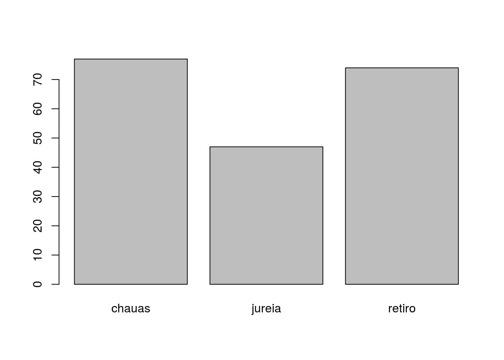
Observação: veja que no R você pode construir um comando chamando função dentro de função em vários níveis. No exemplo acima, o resultado da função table foi colocado como argumento para a função barplot.
Formas alternativas de construir esses gráficos são:
#grafico de barras
barplot(table(cax$fuste))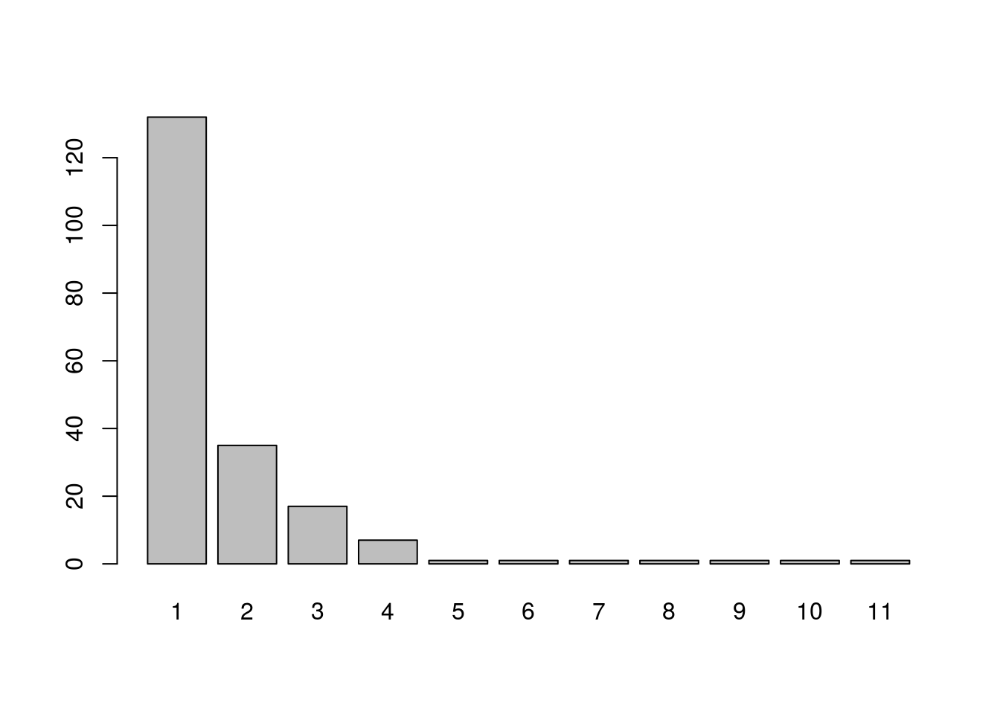
# com a funcao 'plot'
plot(table(cax$fuste))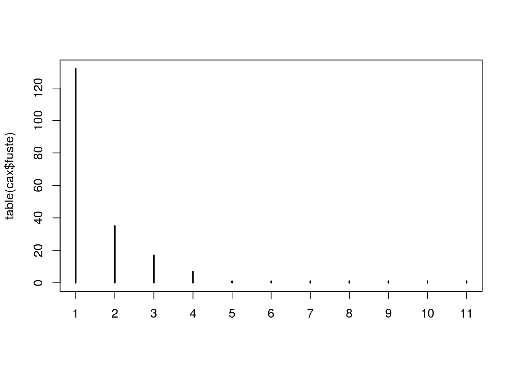
Agora é hora de deixar os caixetais de lado e partir para um outro exemplo. Neste momento, não se preocupe com a explicação por trás do modelo linear, a ideia é apenas que vocês se familiarizem com os comandos de R que usaremos ao longo da semana.
Um exemplo de dados: relação espécie vs. área
Vamos explorar a relação entre o número de espécies de galinhas esféricas em ilhas do mar de Saturno. A pergunta por trás deste exercício é: ilhas maiores sustentam um maior número de espécies de galinhas esféricas?

Criando os dados no R
Vamos criar dois vetores contendo informação de duas variáveis: área e riqueza.
area <- c(303, 379, 961, 295, 332, 47, 122, 11, 53, 2749)
riqueza <- c(3, 10, 20, 7, 8, 4, 8, 3, 5, 23)Confira a saída dos objetos:
area## [1] 303 379 961 295 332 47 122 11 53 2749riqueza## [1] 3 10 20 7 8 4 8 3 5 23Vamos inspecionar os valores com a função ‘summary’:
summary(area)## Min. 1st Qu. Median Mean 3rd Qu. Max.
## 11.00 70.25 299.00 525.20 367.25 2749.00summary(riqueza)## Min. 1st Qu. Median Mean 3rd Qu. Max.
## 3.00 4.25 7.50 9.10 9.50 23.00Vamos visualizar o histograma dos dados de riqueza e área:
par(mfrow=c(1,2)) # define duas janelas gráficas, 1 linha e 2 colunas
hist(area, xlab="Área", ylab="Frequência")
hist(riqueza, xlab="Riqueza", ylab="Frequência")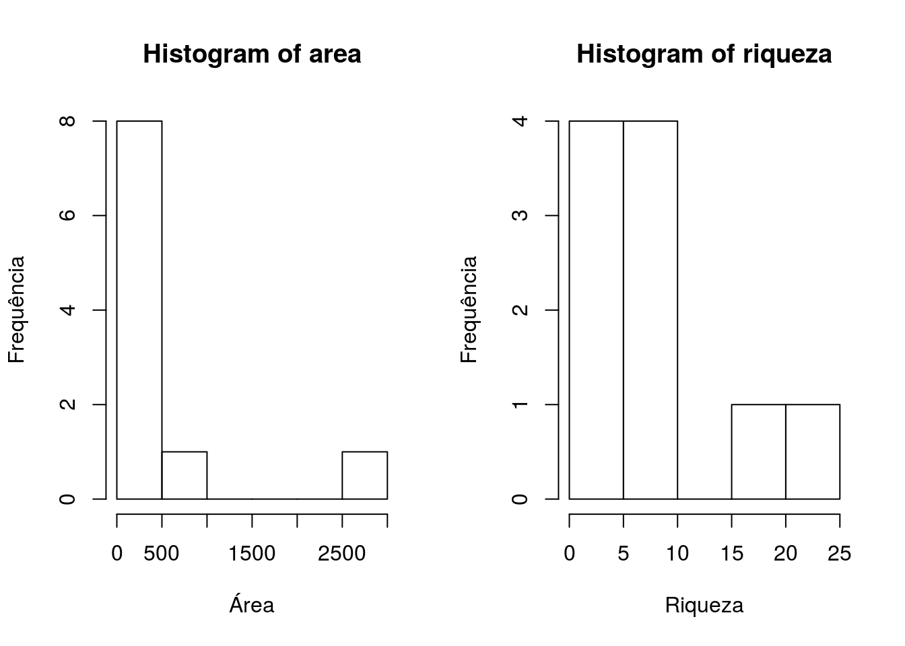
par(mfrow=c(1,1))Qual a média de área:
mean(x=area)## [1] 525.2Qual a variância da área?
varea <- var(area)
varea## [1] 686099.3Note que, para a variância, usamos o sinal <- para fazer a atribuição a um objeto chamado ‘varea’.
Qual o desvio padrão da área?
sd(x=area)## [1] 828.3111Qual a média da riqueza?
mean(riqueza)## [1] 9.1Qual o desvio padrão da riqueza?
sd(riqueza)## [1] 6.967384Qual a relação entre riqueza e área?
plot(x=area, y=riqueza, xlab="Area (ha)", ylab="Número de Espécies")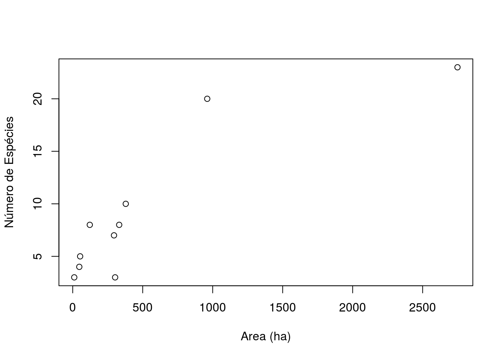
Qual a relação expressa por meio de um modelo linear?
Primeiro construímos o modelo:
modelo1 <- lm(riqueza~area)E agora usamos a função ‘summary’ para mostrar o valor da estimativa dos parâmetros do intercepto e inclinação:
summary(modelo1)##
## Call:
## lm(formula = riqueza ~ area)
##
## Residuals:
## Min 1Q Median 3Q Max
## -4.4614 -2.1245 -0.5101 1.4862 7.6863
##
## Coefficients:
## Estimate Std. Error t value Pr(>|t|)
## (Intercept) 5.226994 1.352158 3.866 0.004770 **
## area 0.007374 0.001431 5.155 0.000869 ***
## ---
## Signif. codes: 0 '***' 0.001 '**' 0.01 '*' 0.05 '.' 0.1 ' ' 1
##
## Residual standard error: 3.555 on 8 degrees of freedom
## Multiple R-squared: 0.7686, Adjusted R-squared: 0.7397
## F-statistic: 26.57 on 1 and 8 DF, p-value: 0.0008693Note que quando aplicamos a função ‘summary’ ao objeto ‘riqueza’ a função retorna as estatísticas básicas do conjunto de dados riqueza. Quando aplicamos a função ‘summary’ ao objeto ‘modelo1’, a função retorna o valor das estimativas dos parâmetros, com o valor de erro, valor de p, R^2, entre outros valores.
Vamos calcular os valores de área previstos pelo modelo:
previsto <- fitted(modelo1)Agora vamos calcular os resíduos:
riqueza - previsto## 1 2 3 4 5 6
## -4.4614204 1.9781293 7.6862601 -0.4024256 0.3247236 -1.5735879
## 7 8 9 10
## 1.8733362 -2.3081114 -0.6178340 -2.4990699Vamos comparar o resultado com o obtido diretamente pela função residuals:
residuals(modelo1)## 1 2 3 4 5 6
## -4.4614204 1.9781293 7.6862601 -0.4024256 0.3247236 -1.5735879
## 7 8 9 10
## 1.8733362 -2.3081114 -0.6178340 -2.4990699Vamos inspecionar graficamente os resíduos do modelo:
par(mfrow=c(2,2)) # comando para criar 4 janelas gráficas, 2 linhas, 2 colunas
plot(modelo1)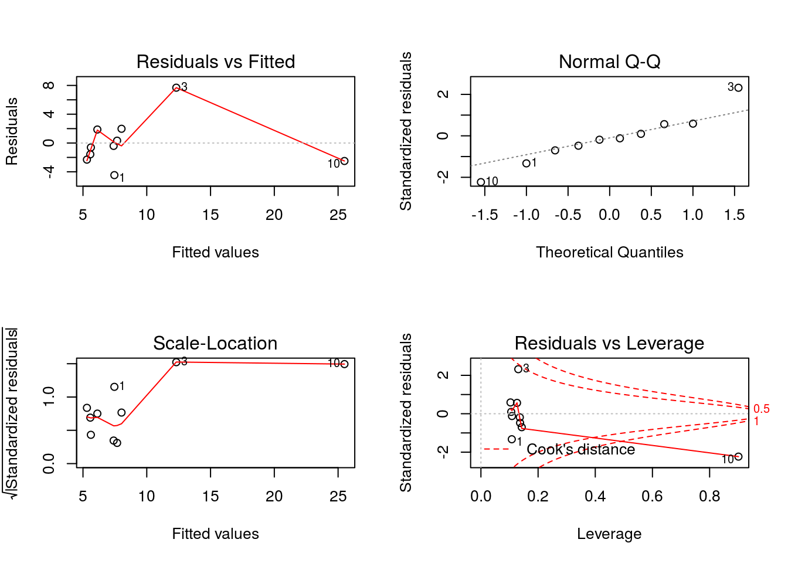
par(mfrow=c(1,1)) # comando para retornar à configuração original de 1 janela gráficaVoltando aos gráficos, vamos agora incluir uma reta com os valores previstos pelo modelo.
plot(x=area, y=riqueza, xlab="Area (ha)", ylab="Número de Espécies")
abline(modelo1)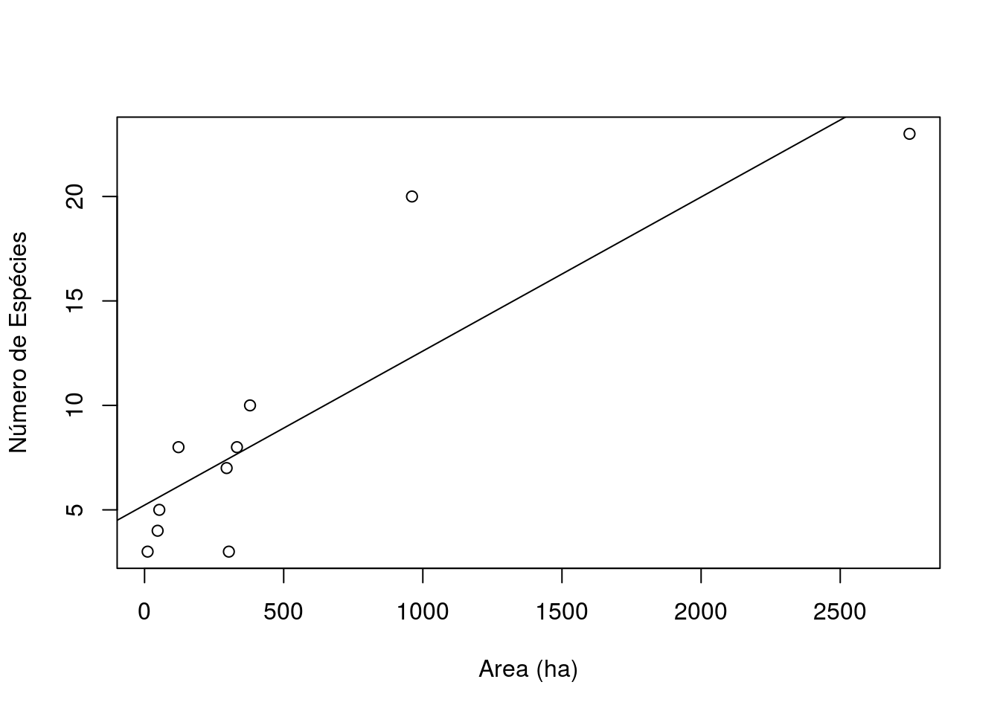
E se transformarmos os dados de riqueza e área em log? Vamos ver como fica o gráfico, agora com os eixos em escala log.
plot(x=area, y=riqueza, xlab="Log Area (ha)", ylab="Log Número de Espécies", log="xy")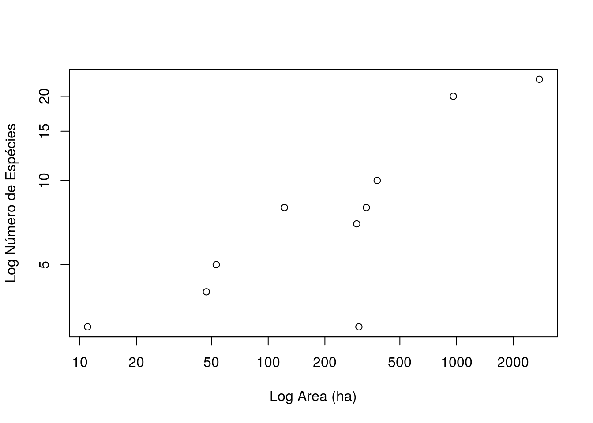
O gráfico anterior pode também ser feito transformando a variável ao invés da escala dos eixos.
plot(x=log(area), y=log(riqueza), xlab="Log Area (ha)", ylab="Log Número de Espécies")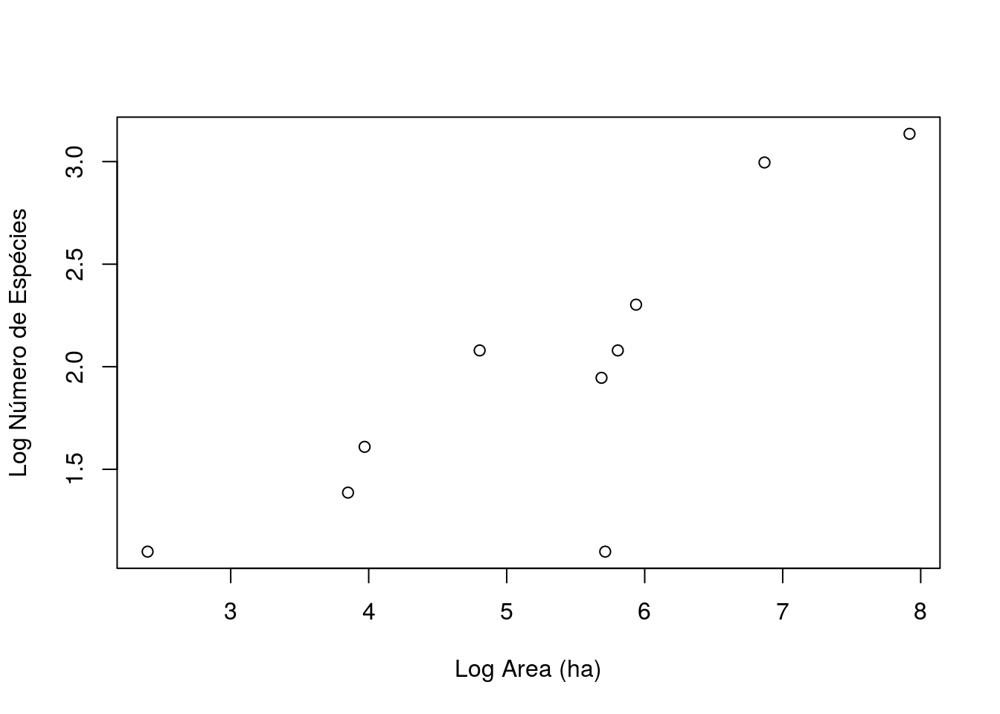
Vamos então construir um novo modelo linear, agora em escala log.
modelo2 <- lm(log(riqueza,base=10)~log(area,base=10))
summary(modelo2)##
## Call:
## lm(formula = log(riqueza, base = 10) ~ log(area, base = 10))
##
## Residuals:
## Min 1Q Median 3Q Max
## -0.44632 -0.03246 0.04681 0.08600 0.19412
##
## Coefficients:
## Estimate Std. Error t value Pr(>|t|)
## (Intercept) 0.01526 0.21493 0.071 0.94516
## log(area, base = 10) 0.36599 0.08987 4.072 0.00357 **
## ---
## Signif. codes: 0 '***' 0.001 '**' 0.01 '*' 0.05 '.' 0.1 ' ' 1
##
## Residual standard error: 0.1865 on 8 degrees of freedom
## Multiple R-squared: 0.6746, Adjusted R-squared: 0.6339
## F-statistic: 16.58 on 1 and 8 DF, p-value: 0.003571Vamos inspecionar os resíduos do modelo:
par(mfrow=c(2,2))
plot(modelo2)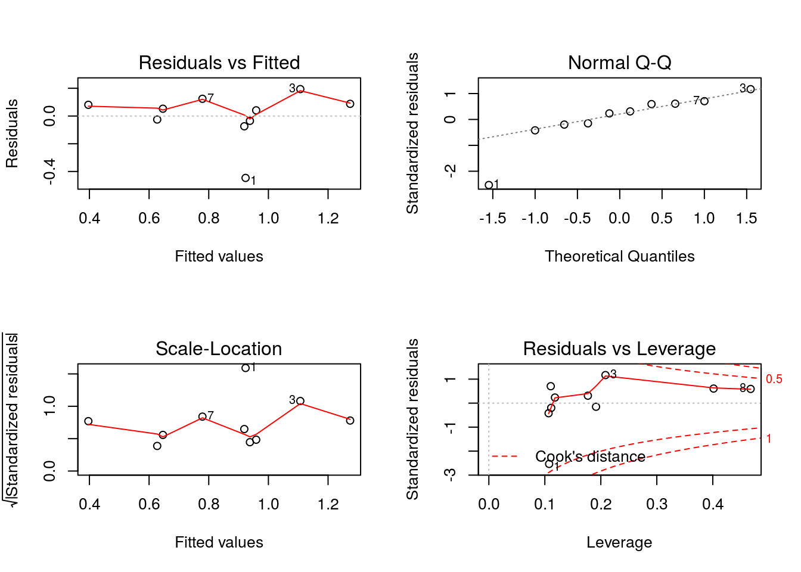
par(mfrow=c(1,1))E, finalmente, criar um gráfico com o novo modelo e os valores previstos pelo modelo:
plot(riqueza~area, xlab="Log Area (ha)", ylab="Log Número de Espécies", log="xy")
abline(modelo2)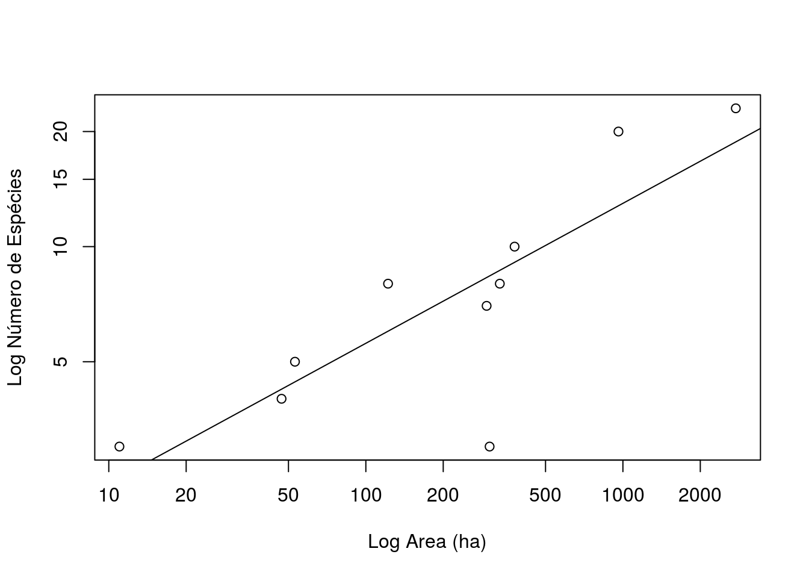